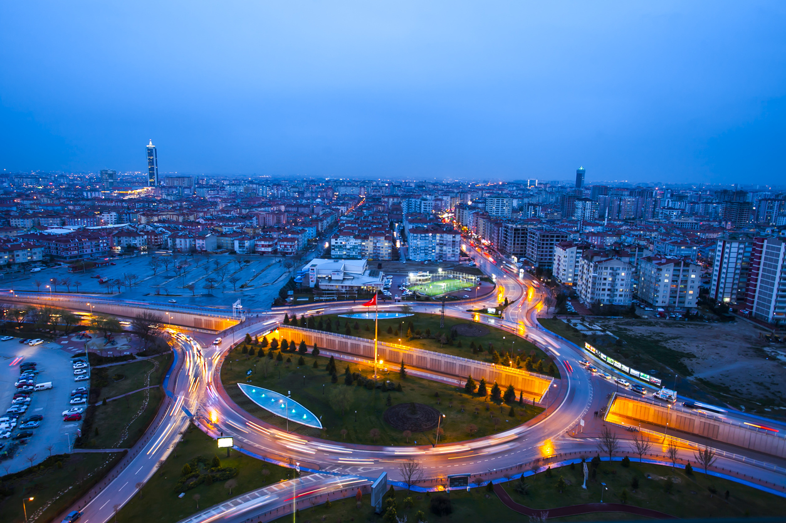

Ekonomik açıdan Türkiye'nin gelişmiş kentlerinden biri olan Konya doğal ve tarihsel zenginlikleriyle de önem taşır. Dünyanın en eski yerleşimlerinden biri olan Çatalhöyük, 2012 yılında UNESCO Dünya Miras Listesi'ne alınmıştır. Şehir Anadolu Selçukluları’nın ve Karamanoğulları’nın başkentliğini yapmıştır. Türkiye'nin en önemli sanayi kentlerinden birisidir. Anadolu Kaplanları'ndandır. Şehrin futbol takımı Konyaspor'dur. Yöresel yemekleri etliekmek, bamya çorbası, Mevlana böreği, yağ somunu, tirit, Konya pilavı, sac arası ve fırın kebabı'dır. Konya’nın simgeleri Mevlana Müzesi (Kubbe-i Hadrâ), çift başlı kartal'dır.
Karamanoğullarının kökeni Azerbaycan'dan Sivas'a göç eden Hoca Saadettin'in oğlu Nur-i Sufi'ye dayanmaktadır. Buradan Torosların eteğinde olan Larende kasabasına gelip yerleşmişlerdir. Karamanoğulları Oğuzların Avşar boyundandırlar. Nur-i Sufi'nin oğlu Kerimeddin Karaman Bey 13. yüzyılda buradan başlamak üzere Kilikya bölgesinin büyük bir kısmında güç sahibi olmuş, bunun üzerine Anadolu Selçuklu Devleti sultanı I. Alaeddin Keykubad tarafından bölgenin beyi olarak atanmıştır. Karamanoğlu Mehmet Bey Konya'yı 1277 yılında beyliğine katmıştır. Selçuklu yıkılışından sonra Konya şehri Karamanoğulları topraklarına katılmış ve beyliğinin başkenti olmuştur. Tam 16 kez Osmanoğulları ve Karamanoğulları arasında el değiştirmiştir.
Şehir 1467 senesinde kalıcı Osmanlı egemenliğine geçmiştir. Sultan II. Mehmed Konya'yı zaptederek Karamanoğlu hakimiyetine son vermiştir. Osmanlı devrinde Konya önce Karaman Eyaletinin sonra da Konya Vilayetinin merkezi olmuştur. Osmanlı Rus Savaşı ve Balkan Harbi sonunda zorunlu göçe zorlanmış yüz binlerce müslüman Arnavut, Çerkes, Boşnak kökenli Balkan ve Kafkas muhaciri tarıma elverişli olması sebebiyle Konya ve ilçelerine iskan edilmişlerdir.
Konya sanayisi günümüzde birçok sektörde üretim yaparak tarihsel olarak kullanılan tahıl ambarı kimliğinin yanına sanayi şehri kimliğini de eklemiştir. Konya’nın bir özelliği de; sanayisinin belli tür ürünlere dayalı olmayıp oldukça geniş bir sektörel alanda üretim yapmasıdır. Diğer bir ifade ile makine sanayisinden kimyaya, tekstilden otomotiv yedek parçaya, elektrik-elektronikten gıdaya, ambalajdan kâğıt sanayine kadar oldukça değişik üretim alanlarında faaliyet göstermektedir. Konya, 130 ülkeye ihracat yapmaktadır. 2013 rakamlarına göre Konya 1.3 Milyar $ ihracat yaparak Türkiye İhracatçılar Meclisi'ne girmiştir.
Konya'nın Türkiye'nin ticari faaliyetleri için etkisi büyüktür. Konya iç bölgelerdeki iller içerisinde önemli bir hinterlant özelliğine sahiptir. Tarımsal üretim, sanayi faaliyetlerinin gelişmesi, nüfus potansiyeli ticaret faaliyetleri için burayı önemli bir pazar haline getirmiştir. Türkiye'nin orta noktasında sayıldığından Türkiye'nin bütün illeri ile kolayca ticaret yapabilmektedir. Ayrıca Türkiye ekonomisine de büyük katkıda bulunur.
2016-17 Sezonunda Konyaspor, futbolda Türkiye Kupası şampiyonu oldu.
2018-2019 Sezonu sonunda, Konyaspor, Süper ligi 8.sırada tamamlamıştır. Anadolu Selçukspor ise 3. Lig takımıdır. BAL’da 3, kadınlar futbol liglerinde iki takımı daha vardır. Basketbol 1. Lig takımı Konyaspor, play-off maçları yarı finalinde yenilerek, lig 4.sü olmuştur. Voleybol erkekler 1. Ligindeki iki takımı da küme düşmüştür. Voleybol 2. Liglerinde 3, bölgesel liginde de 3 takımı vardır.
Ziraat Türkiye Kupası'nda Anadolu Selçukspor 3.turda, Konyaspor 4.turda elenmişlerdir.
Havacılığı sevdirmek amacıyla kurulan Mevlana Sportif Havacılık Kulübü'nün merkezi Meram'dadır. Yamaç paraşütü ve model uçak alanlarında hizmet vermektedir. Kulüp üyeleri özellikle yaz ve bahar aylarında hafta sonları toplanarak etkinlikler düzenlemekte, model uçak gösterileri yapmaktadır. Octocopter adı verilen hava aracı ile firmaların havadan fotoğraf çekimi ihtiyacına cevap verilmektedir.
Önemli spor tesisleri: Konya BŞB. Stadyumu (41.980) ve Konya Spor ve Kongre Merkezi (10.000)'dir.